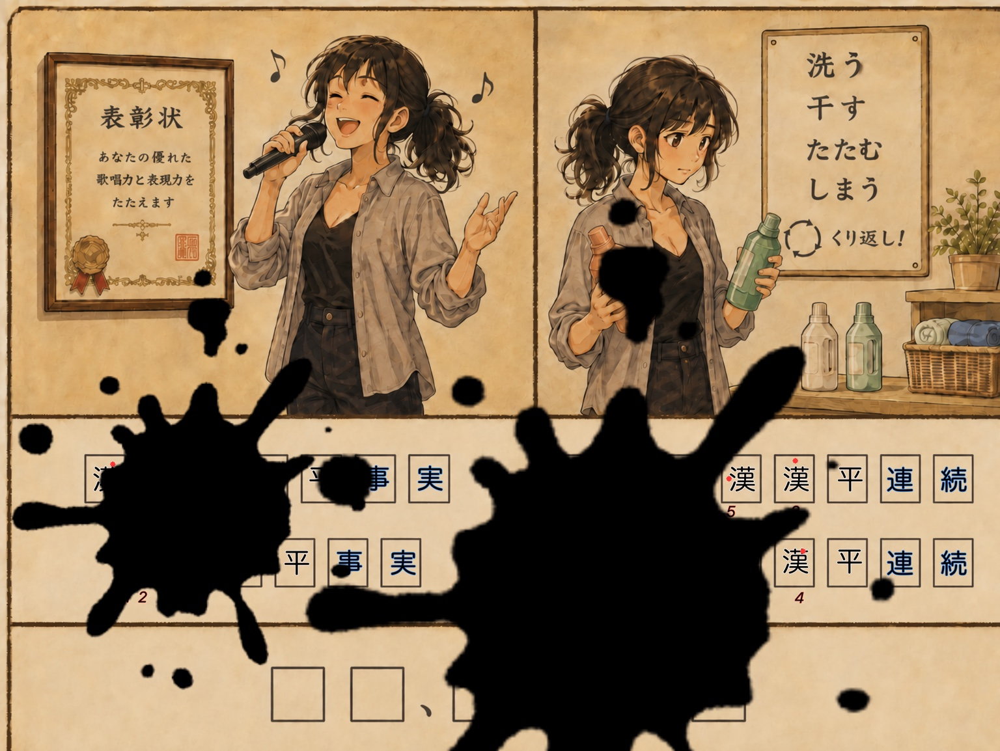
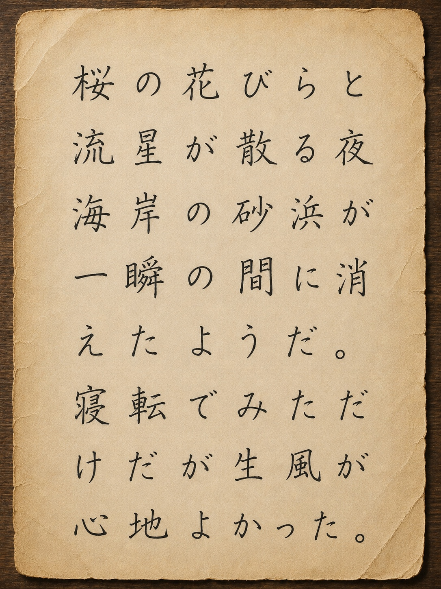
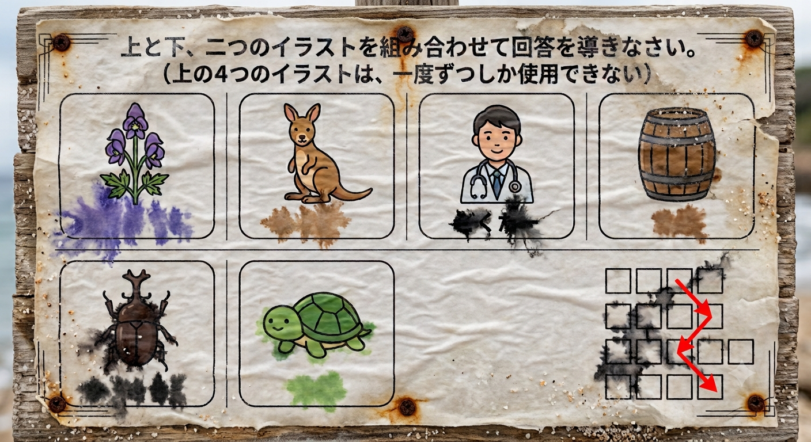
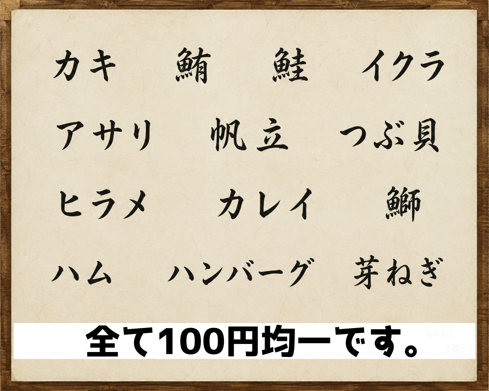

STORY
ある日の帰り道
技術の進歩により、時の流れ方も、世界も、大きく変わった。電車の中は、スマホに流れる映像に時間を奪われ、俯く人ばかりだ。かくいう私も、その一員であるが。
そんな中、何か転機を待っているのに、降ってくるのは、雨や仕事ばかり。「今日は早めに帰ろう」と積もらぬ思いを空に馳せていた時、紙飛行機が春の風に流され、落ちてきた。
紙飛行機か。子どもっぽいなぁ。そう思いながら紙飛行機を広げると、そこには誰かの思いが綴られていた。
ITEMS
アイテムを少し長押しすると、動かして並べ替えられる。
CONTINUE
知るたびに
STORY
技術の進歩により、時の流れ方も、世界も、大きく変わった。電車の中は、スマホに流れる映像に時間を奪われ、俯く人ばかりだ。かくいう私も、その一員であるが。
そんな中、何か転機を待っているのに、降ってくるのは、雨や仕事ばかり。「今日は早めに帰ろう」と積もらぬ思いを空に馳せていた時、紙飛行機が春の風に流され、落ちてきた。
紙飛行機か。子どもっぽいなぁ。そう思いながら紙飛行機を広げると、そこには誰かの思いが綴られていた。
見知らぬ手紙
STORY
世界を照らす自由の像とはなんだろうか。私は知らなかった。ただ、そこにはQRコードが貼られていた。
私はこの出会いを物語として享受するため、QRコードを読み込んだ。この先に何が待っているのだろう。
第一問
必要なら、検索しても構いません。
同じものを選んでください
ソメイヨシノ
選び終えたら確認を押してください
正解
ソメイヨシノは
全てクローンであるとか…。

「赤ペン」と「青ペン」を手に入れた。
第二問
桜の木の向こうには、
青い世界が広がっていた。

正解
海って驚きの秘密がいっぱいで、
神秘的だよね。
第三問
海のそばに、古びた看板が立っている。

看板の答えは、進むべき方角を表している。
ITEM GET
寿司屋への地図
MAP
地図には、うっすらと折り目がついている。
第四問
お店の扉を開けるには暗号解読が必要だよ〜
好きだよね、こういうの。
よく考えて選ぼう。
OPEN
選択しないこともまた選択
（nowhereだしね）
第五問
今売り切れが多くてね。
さんかくの間のものなら渡せるよ。

SECRET ITEM
いぶしぎん
渋い輝きを放つ銀。
上の縁に隠れた形と、
その真下の文字を見比べよう。
ITEM GET
醤油
ITEM GET
実は今日さかな盗まれちゃってて…
だからもうお愛想で頼むよ
寿司屋
ご注文 0点
合計 ￥0
ありがとうございました
OUTSIDE
どこへ向かえばいいんだろう。
近くに看板等は見当たらない。
どこかに記されているのだろうか。
STORY
“女神”…“世界を照らす自由の像”…つまり、 “自由の女神”に会いに行けということなのか。
いつのまにか、帰路に着くことを忘れ、 この画面に没頭していた。
「自由ってなんだろう」 そんなことを考えながら、向かうのであった。
FINAL STAGE
知っているはずの姿を、もう一度よく見よう。
検索してもよい。
像が作られた素材と、本来の色を調べよう。
LAST INSTRUCTION
アイテムから２つを選択
0 / 2
目の前の誰かではない。
ずっと俯き、世界を同じ姿だと思い込んでいた自分の影だ。
影に狙いを定めよう。
……
裏側を知りたくなった君なら、
最後の選択も、間違わなかったね。
知るたびに
世界は姿を変える。
LAST ACTION
左下の紙飛行機を、右上へ大きく飛ばそう。
紙飛行機に触れて、そのまま右上へ。
THE WORLD CHANGES WITH CONTEXT
知るたびに
世界は姿を変える。
変わったのは世界ではない。
背景を知った、あなたの見え方だ。
END